[←][→]：控制角色左右移动
[↓]：控制角色蹲下，蹲下时不能移动和攻击，有楼梯的地方是下楼梯
[↑]：进门，开启传送点和存档点，有楼梯的地方是上楼梯，按住上后按B释放魔法
[A]：跳
[B]：魔杖攻击，按住上后按B释放魔法
[start]：开启菜单
[select]：切换当前魔法
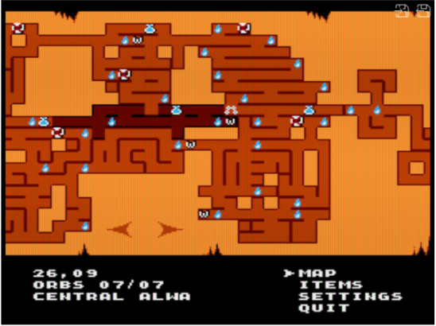
只有获得物品地图后此选项才有用
蓝火图标代表存档点
骷髅图标代表boss
W图标代表传送点
烧瓶图标代表有井水等可以补充水
地图下面的数字26,09代表当前房间的坐标
“ORBS 07/07”代表当前区域 已获得宝珠数(7)/总的宝珠数(7)
“CENTRAL ALWA”代表当前区域名
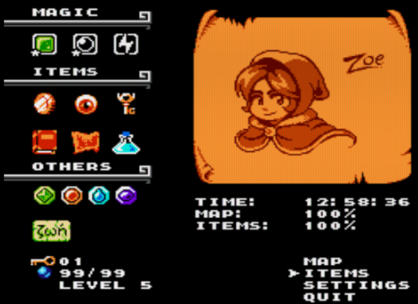
详情见物品说明
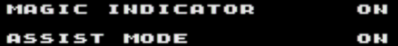
“MAGIC INDICATOR”开关一些信息显示
“ASSIST MODE”辅助模式：游戏死亡后会询问是否继续，选继续就会保留所有状态(获得的物品，开启的地图和机关)回到最新开启的存档点。开启辅助模式后，选继续就会保留所有状态从当前房间开始。强烈建议手残玩家开启这个模式。
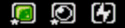
按select键可以切换
[砖块]：获取绿宝石后得到此魔法。图标为绿色方块，释放后出现绿色方块，此绿色方块被释放后自然下落，落到地上可以推动。砖块可以阻挡一些敌人的射击，可以放置在绿色开关上，可以用于垫脚跳高一点的平台，还可以垫在普通刺上。冷却时间最短
[气泡]：获取绿宝石后得到此魔法。图标为蓝色圆球。释放后出现蓝色气泡。这个气泡会在释放后自动向上漂浮一会儿然后自动破裂。这专门用于踩在上面跳往更高的平台。冷却时间比砖块长一点
[闪电]：获取黄宝石后得到此魔法，释放后发射闪电。这会打开带有闪电符号的门，也能攻击敌人（可以穿墙攻击）。没有升级。冷却时间最长
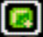
[砖块2]：获取高级绿宝石后得到。绿色方块的升级。图标为左下带星的绿色方块。可以漂浮在水中。你可以站在上面漂过河流。
[气泡2]：获取高级蓝宝石后得到此魔法。蓝色气泡升级。图标为左下带星蓝色圆球。气泡会不会破裂持续上升直到它碰到什么东西。可上升多个屏幕。
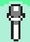
[魔杖]Magic Staff：可以攻击敌人和打破灰色方型石块

[硬币]Copper Coin：获得后和那个看起来像小偷的家伙交谈，他会打开通往烧瓶的门。
[魔眼]Eye of the Beholder：使某些平台/门“可见”。（在收集到此物品之前它们实际上并不存在。）如果您看到火焰或其他东西上方有一个巨大的间隙，这时候可能需要这个。
[大钥匙]Key：解锁紫水晶通道地牢。
[魔法书]Book of Sutter：使你的武器伤害加倍。
[地图]Map：给你一张地图...…
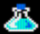
[烧瓶]Flask：可以在有井水的地方装满水。如果你被普通攻击打死，会自动补满血。但是对一击必杀的陷阱无效
[碎片]Tablet pieces：如果收集了所有碎片，则会解锁一个只有一点点不同的结局。如果想看请在“感谢播放”屏幕上停留几分钟。(FC版我没发现有什么不同)
[钥匙]Keys：用于解锁钥匙门。
[宝珠]Orbs：在战斗开始前自动扣boss的生命值。10 颗球会减少 1 点生命值，25 颗球会减少 2 点生命值，35 点会减少 3 点，45 点会减少 4 点，99 点会减少 5 点。（注意从 4 级到 5 级的大幅跳跃。最终的 Boss 相当容易，最后一个级别效果很小，所以除非你想要 100%收集，否则没有必要收集超过 45 个。）
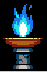
[存档点]：按上或攻击点燃火炬以存档。游戏死亡后会询问是否继续，选继续就会保留所有状态(获得的物品，开启的地图和机关)回到最新开启的存档点。开启辅助模式后，选继续就会保留所有状态从当前房间开始。强烈建议手残玩家开启这个模式。
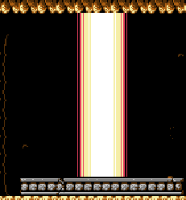
[传送点]：开启后可传送到其他已开启的传送点

[普通尖刺]：碰到伤一格血，砖块可以垫在上面，装水烧瓶起死回生有效
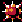
[一击必杀尖刺]：碰到必死，砖块不能垫在上面，装水烧瓶起死回生无效
[河流]： 碰到必死，砖块2和场景砖块可以垫在上面漂流
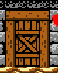 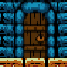
[房间门]：按上进入房间
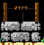
[井]：按↑加满血，如果有烧瓶还会给烧瓶灌满水
[绿开关]：需要砖块压在上面触发
[紫开关]：需要角色站在上面触发
[场景砖块]：功能和魔法砖块一样，但是可以浮在河流上漂流
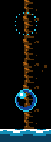
[场景气泡]：功能和魔法气泡一样，会自动破裂
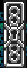
[钥匙门]：获得任意钥匙触碰可开启
[闪电门]：用闪电魔法击中可开启
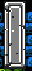
[机关门]：一般压下本场景内的绿开关或紫开关可开启
[Boss门]：内有boss，触碰开启